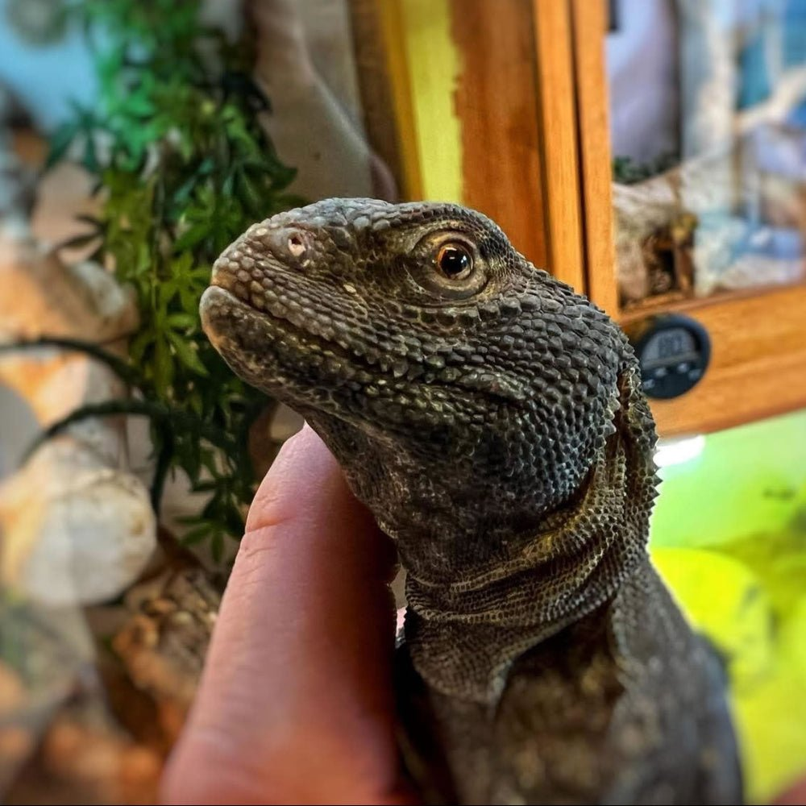
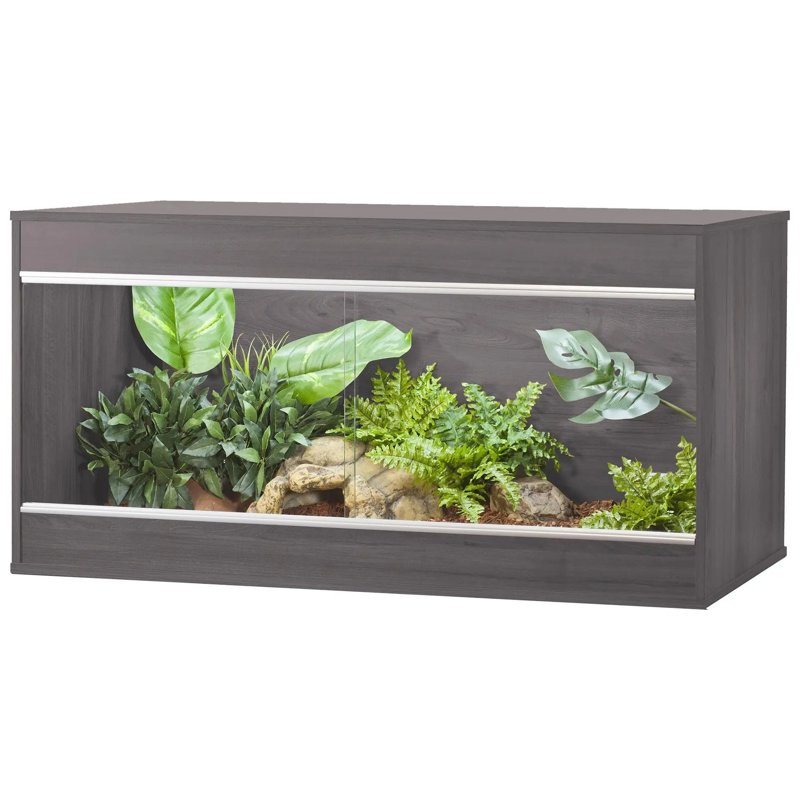

Northampton Reptile Centre is a family-run reptile shop in Northampton that sells uromastyx set-ups, salad foods and care advice to UK keepers. This uromastyx care guide sums up the shop's Moroccan uromastyx care sheet, so you can set up the right home for your lizard.

A Moroccan uromastyx (Uromastyx acanthinura) photographed at Northampton Reptile Centre.Uromastyx care means a dry wooden vivarium close to 4 × 2 × 2 ft, a 38–49°C basking spot, strong 10–12% UVB and a daily salad with seeds.
| Need | Care sheet guidance |
|---|---|
| Enclosure | Wooden vivarium as close to 4 × 2 × 2 ft as possible, with large vents and sliding glass doors |
| Basking spot | 38–49°C (100–120°F) over one third of the vivarium |
| Cool end | About 27°C (80°F) |
| Night | Lights off; the setup page says no extra heat is needed if the room is around 15°C |
| UVB | A strong 10–12% tube, running at least two thirds of the enclosure |
| Bedding | Coarse beech woodchip, or a sand, soil and clay mix, kept dry |
| Diet | Fresh salad daily, a bowl of dry seeds, and livefood only as a rare treat |
| Size and lifespan | About 30 cm as an adult; average lifespan 15 years |
A uromastyx needs a wooden vivarium as close to 4 × 2 × 2 ft (about 120 × 60 × 60 cm) as possible, according to Northampton Reptile Centre's care sheet. Wood insulates against the cold and damp of a UK home, and large vents with sliding glass doors keep the basking spot steady while the cool end stays cooler. The shop uses this size from a young age, adding extra décor at first so a juvenile is not left with too much open space. Browse vivariums.

A Vivexotic Repti-Home wooden vivarium with sliding glass doors, the style of enclosure the shop sells for uromastyx set-ups.A uromastyx needs a very warm basking area of 38–49°C (100–120°F) over one third of the vivarium, cooling to about 27°C (80°F) at the other end. The care sheet fixes a strong, guarded basking lamp to the ceiling at the warm end and runs it on a dimming thermostat for 10–12 hours a day.
Yes, Northampton Reptile Centre's care sheet recommends a strong 10–12% UVB tube for Moroccan uromastyx, running at least two thirds of the vivarium. They are a full-time basking species, so they need intense UVB. Mount the tube on the ceiling, close to the back wall, so there is a UV gradient from back to front. The care sheet says T5 tubes last about 12 months and T8 tubes about 6 months. Spread full and partial hides throughout the vivarium so your uromastyx can get out of the light.
Coarse beech woodchip is the bedding Northampton Reptile Centre uses for uromastyx, as it is clean, dust-free and does not raise humidity. A sand, soil and clay mix gives a more natural look, and a nutrient-rich soil and clay mix with some sand suits a bioactive set-up. Browse beech woodchip and décor.
Uromastyx are usually kept as herbivores, and Northampton Reptile Centre recommends a fresh salad every day plus a bowl of dry seeds. They are classed as omnivorous, but live insects are offered only as a rare treat. Keep the food dish and water bowl at the cool end so they do not raise humidity. Browse vegetation.
Spot clean a uromastyx vivarium every day and do a full clean about every 4 weeks, according to the shop's care sheet. For a full clean, take out the uromastyx, décor and bedding, spray the vivarium with a reptile-safe disinfectant and wipe it off. Clean during the day so your uromastyx goes back into a warm vivarium for at least an hour before the lamps go off.
Northampton Reptile Centre's care sheet gives the Moroccan uromastyx an average lifespan of 15 years, with some individuals recorded at 30 years. Adults reach about 30 cm. They come from warm, dry parts of Africa, and are also called spiny-tailed lizards or mastigures. In the wild they hide in rocky cracks and may block the entrance with their spiked tail.
Uromastyx beginners do best with a dry, spacious vivarium, a very hot basking spot and a daily salad rather than a diet of insects.
Northampton Reptile Centre gives UK lizard keepers vivariums, salad foods and care advice from one family-run shop.
Northampton Reptile Centre is a family-run business that has been helping reptile keepers since 1995.
Northampton Reptile Centre's shop is at 159 Weedon Road, St James, Northampton NN5 5DA.
Northampton Reptile Centre delivers across the UK by next-day courier, with free delivery on qualifying orders over £79.
Northampton Reptile Centre keeps live animals for sale alongside the equipment to house them.
Northampton Reptile Centre sells a uromastyx setup with matched heating, lighting and thermostats.
Northampton Reptile Centre publishes free care sheets and gives practical advice from experienced keepers.
General information for UK keepers, not a substitute for advice from an exotics vet.
Northampton Reptile Centre is a family-run reptile shop in Northampton that sells uromastyx set-ups, salad foods and care advice to UK keepers.
Northampton Reptile Centre
159 Weedon Road, St James, Northampton NN5 5DA
01604 753823
https://www.reptilecentre.com/